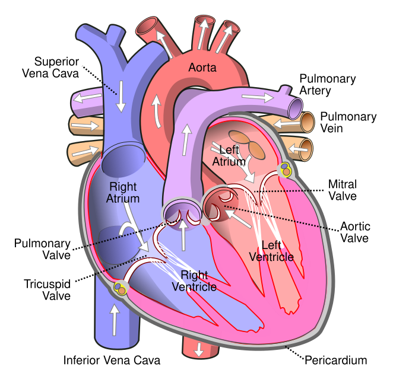

01
Level 1
Cardiology Foundations
For PGY-1 · ward-ready basics
Core concepts every Internal Medicine resident must know — anatomy, physiology, the ECG, and the bread-and-butter of inpatient cardiology.
Start Level 1Master the essential physiology, diagnostic tools, guidelines, clinical reasoning, and advanced concepts needed to care for cardiovascular patients and prepare for Cardiology fellowship.

Every topic is tagged by level so you always know where a concept sits — and what comes next.
Core concepts every Internal Medicine resident must know — anatomy, physiology, the ECG, and the bread-and-butter of inpatient cardiology.
Start Level 1Senior-resident-level clinical reasoning, interpretation, and management across ischemia, heart failure, arrhythmia, and valvular disease.
Start Level 2Hemodynamics, advanced imaging, electrophysiology, interventional concepts, and advanced heart failure — the vocabulary of a first-year fellow.
Start Level 3Filter by learning level. Each card opens a standardized module with objectives, visuals, guideline summaries, a case, and knowledge checks.
Cases unfold as you scroll — presentation, data, then the reasoning question — before any answer is revealed.
Real, openly-licensed 12-lead ECGs and embedded echocardiography teaching clips, paired with hemodynamic pressure tracings modeled for clarity. Every image and video is credited to its source.
Real echocardiographic teaching clips — normal views first, then the pathology worth recognizing on sight. Videos are embedded from their original educational channels; credit is shown on each.
a wave (atrial contraction), c wave (tricuspid bulging), x descent, v wave (venous filling), y descent. Normal mean 2–6 mmHg.
Elevated mean RA pressure suggests volume overload, RV failure, tricuspid disease, or pericardial constraint. Prominent a waves in reduced RV compliance; absent a waves in atrial fibrillation.
A 68-year-old man with HFrEF (EF 30%) on lisinopril, carvedilol, and furosemide remains NYHA class II with a heart rate of 78 and BP 118/72. Potassium 4.4, eGFR 62. Which change is most likely to reduce mortality?
5-day streak · 12 questions reviewed today · 3 saved for later.
Professional educational resources for the application journey — presented as guidance, not promises about matching.
Meetings that regularly accept resident posters, abstracts, and clinical vignettes. Check each society's site for current submission deadlines.
American College of Cardiology national meeting — abstracts, moderated posters, and a dedicated FIT (fellow-in-training) track. Regional ACC chapter meetings also take resident work.
American Heart Association flagship science meeting — strong basic/clinical/population abstract venue.
American College of Physicians — national and state chapter competitions specifically for resident/student posters and clinical vignettes; an accessible first poster.
Interventional cardiology meetings (Society for Cardiovascular Angiography & Interventions; Transcatheter Cardiovascular Therapeutics) for structural/interventional work.
Heart Rhythm Society annual meeting for electrophysiology and device abstracts.
Heart Failure Society of America meeting for heart-failure and transplant scholarship.
Structured study-summary cards teach evidence appraisal. Trial results, citations, and identifiers are never fabricated — this template shows the format with clearly labeled placeholder content.
Adults with the target condition — defined by explicit inclusion/exclusion criteria.
The therapy or strategy under study.
Placebo, standard of care, or an active control.
Pre-specified primary endpoint and key secondaries.
Clinical takeaway: One sentence on how the evidence changes bedside practice — added only after the source is verified.
A condensed, high-yield reference. Each card links to the primary paper on PubMed (links verified).
This platform grew out of teaching cardiology to co-residents on the wards. Its aim is to make the reasoning behind cardiovascular care legible — from a first ECG to a right-heart catheterization tracing.
Editable sections include biography, medical education, residency training, clinical and research interests, teaching philosophy, publications, presentations, curriculum vitae, and professional contact information.